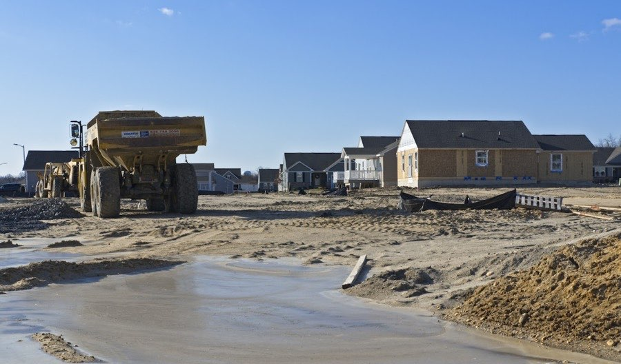

Container hire, rubble removal and material delivery
Container hire with the quote confirmed before dispatch
For rubble, soil, construction waste, wood, green waste or bulk material delivery, send the location, load, amount and access details. We speak English — call or WhatsApp +420 738 505 028. Looking for skip hire or a dumpster rental? That is exactly what we do.
For a quick quote, send 4 thingsaddress · material · amount · access
- Price
- VAT and inclusions clarified before dispatch
- Area
- Prague-West, Unhošť, Nučice, Kladno
- Plain English
- No Czech waste terms needed
- Photos
- Usually speed up the quote
Why choose Kontejnerovka.cz as an English-speaking customer
You do not need to know Czech waste categories, container rules or the right local wording. Send the address, what needs to be removed or delivered, approximate amount, access and a photo. The quote is confirmed for the real job before dispatch.
No vague price promise
A fair container quote depends on route, waste type, weight, disposal, access, standing time and VAT. We clarify what is included and what could change the price before the truck is sent.
Local Prague and Central Bohemia context
Prague streets, private yards, village access roads and construction sites can all change the arrangement. Local details are handled through the quote, not left as a surprise on delivery day.
Czech address details that help
For Prague, send the city district if you know it, for example Prague 5, Prague 6, Prague 13 or Prague 17. Outside Prague, send the town or village and the exact address when possible. A map pin is fine if the Czech address is hard to write.
Prague-West is not Prague 5
Prague-West and Prague-East are Central Bohemian districts around Prague, not Prague city districts. Prague 5, Prague 6, Prague 13 and Prague 17 are city districts inside Prague. If you are unsure, the exact address or map pin is enough.
Private land vs public street
A private yard, driveway or construction site is usually simpler. A street, pavement or other public area may depend on municipality or Prague district rules. We confirm timing after the placement spot is clear.
Skip hire, dumpster rental, container hire
English speakers may search for skip hire or dumpster rental. In Czech practice, the useful request is simply the address, material, amount, access and where the container can stand.
Quick facts
Kontejnerovka.cz in one answer
Kontejnerovka.cz is a local container transport service operated by Matyáš Mašín. It arranges container delivery, rubble removal, soil removal, waste removal and bulk material delivery in Prague and Central Bohemia.
- Phone: +420 738 505 028
- Main areas: Prague, Prague-West, Unhošť, Svárov, Nučice, Rudná, Kladno, Hostivice and Beroun
- Quotes are confirmed by address, material, amount, access, route and VAT
Services
Container delivered, loaded container collected, material brought back to site
Simple arrangement for renovations, construction work, clear-outs, gardens and company jobs. The final quote depends on location, waste type, volume, weight, access and disposal or material route.
Container delivery
We agree the place, timing, access and collection before dispatch.
Service detailRubble and soil removal
Renovation rubble, concrete, bricks, plaster, excavation soil and clean recyclable material.
Rubble removalWood and green waste
Branches, garden waste, wood and seasonal property clean-ups by agreement.
Green waste removalBulk material delivery
Sand, gravel, pea gravel, recycled aggregate, soil and concrete by job and availability.
Material deliveryPricing
A fair quote starts with the actual address and load
We do not publish a one-size-fits-all price because route, material, disposal, weight, access and standing time can change the job. You get the price basis confirmed before dispatch.
Location and route
Prague, Prague-West, Kladno, Beroun and Rakovník can mean different routes and disposal points.
Material type
Clean rubble, concrete, soil, wood and mixed waste are handled differently.
Access and timing
Standing on a street, narrow access or waiting on site can affect the quote.
Local focus
The most practical routes are around Svárov, Unhošť, Nučice and Rudná
We also work in Prague and wider Central Bohemia. Close routes are easier to plan, especially when removal and material delivery can be connected sensibly.
Frequently served towns
Svárov, Unhošť, Nouzov, Červený Újezd, Ptice, Pavlov, Kyšice, Malé and Velké Přítočno, Chyňava including Podkozí, Jeneč, Chýně, Rudná, Nučice, Hostivice, Braškov, Velká Dobrá and nearby Kladno areas.
Prague and Central Bohemia
Prague 5, Prague 6, Prague 13, Prague 17, Prague-West, Prague-East, Kladno, Beroun, Rakovník, Slaný, Hořovice, Zdice and Králův Dvůr by route.
What helps the quote
Exact address, material type, approximate amount, access and a photo of the standing or tipping place.
Quick quote estimator
Get a useful first read before sending a request
This is not a binding price calculator. It helps you describe the job clearly and shows which details matter before we confirm the real quote.
FAQ
Common questions before ordering
How quickly can I get a quote?
The fastest way is to call or send the address, material, amount, access details and a photo. The price is confirmed for the specific job.
Do you work outside Prague?
Yes. We serve Prague and Central Bohemia, with strong focus on Prague-West, Unhošť, Svárov, Nučice, Rudná, Kladno, Hostivice and Beroun.
Can I ask in English without knowing Czech waste terms?
Yes. A plain English description, photos and an exact address or map pin are enough to start the quote.
Can I mix rubble, soil, wood and green waste?
Not without agreement. Different materials can have different disposal routes and mixing can change the price.

Waste out, material in
One conversation can cover removal and delivery
If you need soil or rubble removed and recycled aggregate, gravel or sand delivered afterwards, say it in the same request. We will confirm whether it can be planned sensibly.
We remove
- rubble, bricks, plaster and concrete
- soil and excavation material
- wood and green waste
- bulky or mixed waste by agreement
We deliver
- sand
- gravel and pea gravel
- recycled aggregate
- soil and concrete by agreement

Quote request
Get a quote without learning Czech waste terms
The request goes to info@kontejnerovka.cz. Simple English is fine: address or map pin, material, amount, access and photo. For urgent jobs, calling is usually fastest.